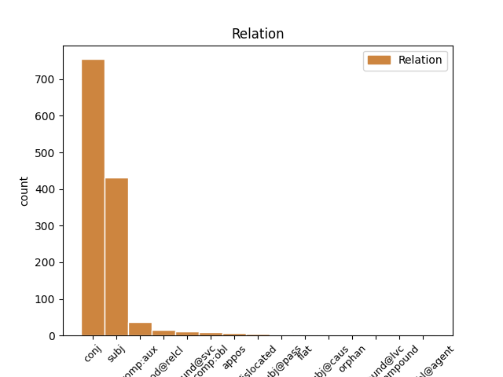
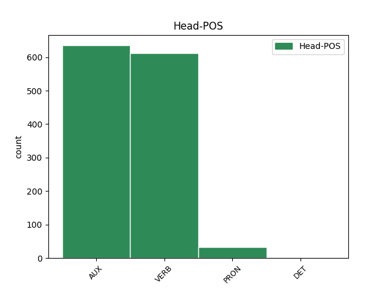
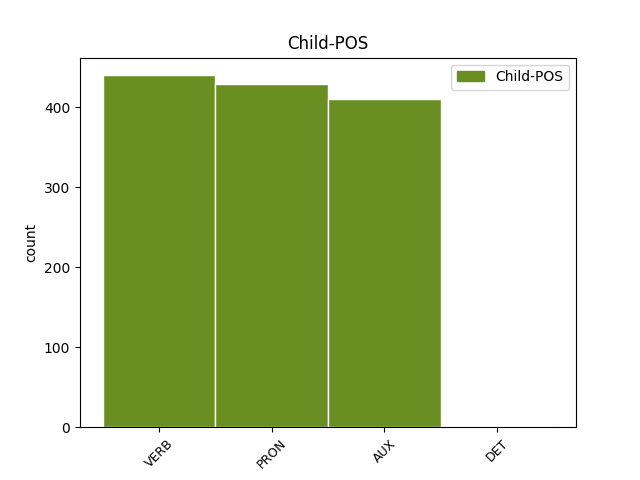

Distribution of features within this leaf



Agreement Rules sorted by frequency.
- When the dependent token is the conjunct(conj) of the head token,
1 Այդ _ _ _ _ 0 _ _ _
2 մեթոդների _ _ _ _ 0 _ _ _
3 դեմ _ _ _ _ 0 _ _ _
4 են եմ AUX _ Aspect=Imp|Mood=Ind|Number=Plur|Person=3|Polarity=Pos|Tense=Pres|VerbForm=Fin 0 _ _ _
5 դրվել _ _ _ _ 0 _ _ _
6 ժամանակակից _ _ _ _ 0 _ _ _
7 քաղտեխնոլոգիաները _ _ _ _ 0 _ _ _
8 , _ _ _ _ 0 _ _ _
9 և _ _ _ _ 0 _ _ _
10 կհաղթի հաղթել VERB _ Aspect=Prosp|Mood=Cnd|Number=Sing|Person=3|Polarity=Pos|Subcat=Tran|Tense=Pres|VerbForm=Fin|Voice=Act 4 conj _ LTranslit=haġt’el|Translit=khaġt’i
11 նա _ _ _ _ 0 _ _ _
12 , _ _ _ _ 0 _ _ _
13 ով _ _ _ _ 0 _ _ _
14 գումար _ _ _ _ 0 _ _ _
15 չի _ _ _ _ 0 _ _ _
16 խնայի _ _ _ _ 0 _ _ _
17 : _ _ _ _ 0 _ _ _
1 Դատելով _ _ _ _ 0 _ _ _
2 Արմեն _ _ _ _ 0 _ _ _
3 Աշոտյանի _ _ _ _ 0 _ _ _
4 հայտարարություններից _ _ _ _ 0 _ _ _
5 ՝ _ _ _ _ 0 _ _ _
6 իրենք ինքը PRON _ Case=Nom|Number=Plur|Person=3|PronType=Emp 8 subj _ LTranslit=ink’ë|Translit=irenk’
7 խաղադրույք _ _ _ _ 0 _ _ _
8 են եմ AUX _ Aspect=Imp|Mood=Ind|Number=Plur|Person=3|Polarity=Pos|Tense=Pres|VerbForm=Fin 0 _ _ _
9 անում _ _ _ _ 0 _ _ _
10 Կարապետյանի _ _ _ _ 0 _ _ _
11 վրա _ _ _ _ 0 _ _ _
12 ՝ _ _ _ _ 0 _ _ _
13 պայմանով _ _ _ _ 0 _ _ _
14 , _ _ _ _ 0 _ _ _
15 որ _ _ _ _ 0 _ _ _
16 Սերժ _ _ _ _ 0 _ _ _
17 Սարգսյանը _ _ _ _ 0 _ _ _
18 կպահպանի _ _ _ _ 0 _ _ _
19 իր _ _ _ _ 0 _ _ _
20 դերը _ _ _ _ 0 _ _ _
21 : _ _ _ _ 0 _ _ _
1 Սերժ _ _ _ _ 0 _ _ _
2 Սարգսյանի _ _ _ _ 0 _ _ _
3 պայմանական _ _ _ _ 0 _ _ _
4 « _ _ _ _ 0 _ _ _
5 տեխնոկրատների _ _ _ _ 0 _ _ _
6 » _ _ _ _ 0 _ _ _
7 թիմը _ _ _ _ 0 _ _ _
8 ՀՀԿ-ում _ _ _ _ 0 _ _ _
9 պետք _ _ _ _ 0 _ _ _
10 է եմ AUX _ Aspect=Imp|Mood=Ind|Number=Sing|Person=3|Polarity=Pos|Tense=Pres|VerbForm=Fin 0 _ _ _
11 որպես _ _ _ _ 0 _ _ _
12 դաշնակից _ _ _ _ 0 _ _ _
13 ընտրի ընտրել VERB _ Aspect=Prosp|Mood=Sub|Number=Sing|Person=3|Polarity=Pos|Subcat=Tran|Tense=Pres|VerbForm=Fin|Voice=Act 10 comp:aux _ LTranslit=ëntrel|Translit=ëntri
14 կամ _ _ _ _ 0 _ _ _
15 Կարապետյանի _ _ _ _ 0 _ _ _
16 նոր _ _ _ _ 0 _ _ _
17 թիմին _ _ _ _ 0 _ _ _
18 , _ _ _ _ 0 _ _ _
19 կամ _ _ _ _ 0 _ _ _
20 էլ _ _ _ _ 0 _ _ _
21 հին _ _ _ _ 0 _ _ _
22 ընկեր _ _ _ _ 0 _ _ _
23 օլիգարխներին _ _ _ _ 0 _ _ _
24 : _ _ _ _ 0 _ _ _
1 Այդ _ _ _ _ 0 _ _ _
2 մեթոդների _ _ _ _ 0 _ _ _
3 դեմ _ _ _ _ 0 _ _ _
4 են _ _ _ _ 0 _ _ _
5 դրվել _ _ _ _ 0 _ _ _
6 ժամանակակից _ _ _ _ 0 _ _ _
7 քաղտեխնոլոգիաները _ _ _ _ 0 _ _ _
8 , _ _ _ _ 0 _ _ _
9 և _ _ _ _ 0 _ _ _
10 կհաղթի _ _ _ _ 0 _ _ _
11 նա նա PRON _ Case=Nom|Number=Sing|Person=3|PronType=Prs 0 _ _ _
12 , _ _ _ _ 0 _ _ _
13 ով _ _ _ _ 0 _ _ _
14 գումար _ _ _ _ 0 _ _ _
15 չի եմ AUX _ Aspect=Imp|Mood=Ind|Number=Sing|Person=3|Polarity=Neg|Tense=Pres|VerbForm=Fin 11 mod@relcl _ LTranslit=em|Translit=či
16 խնայի _ _ _ _ 0 _ _ _
17 : _ _ _ _ 0 _ _ _
1 Միայն _ _ _ _ 0 _ _ _
2 տեսնում _ _ _ _ 0 _ _ _
3 էին _ _ _ _ 0 _ _ _
4 , _ _ _ _ 0 _ _ _
5 որ _ _ _ _ 0 _ _ _
6 երբեմն _ _ _ _ 0 _ _ _
7 առավոտյան _ _ _ _ 0 _ _ _
8 , _ _ _ _ 0 _ _ _
9 երբեմն _ _ _ _ 0 _ _ _
10 երեկոյան _ _ _ _ 0 _ _ _
11 Գյուղ _ _ _ _ 0 _ _ _
12 է _ _ _ _ 0 _ _ _
13 իջնում _ _ _ _ 0 _ _ _
14 , _ _ _ _ 0 _ _ _
15 նայում _ _ _ _ 0 _ _ _
16 ՝ _ _ _ _ 0 _ _ _
17 ինչ _ _ _ _ 0 _ _ _
18 կա կամ VERB _ Aspect=Imp|Mood=Ind|Number=Sing|Person=3|Polarity=Pos|Subcat=Intr|Tense=Pres|VerbForm=Fin|Voice=Mid 0 _ _ _
19 - _ _ _ _ 0 _ _ _
20 չկա կամ VERB _ Aspect=Imp|Mood=Ind|Number=Sing|Person=3|Polarity=Neg|Subcat=Intr|Tense=Pres|VerbForm=Fin|Voice=Mid 18 compound@svc _ LTranslit=kam|Translit=čka
21 ու _ _ _ _ 0 _ _ _
22 դարձյալ _ _ _ _ 0 _ _ _
23 բարձրանում _ _ _ _ 0 _ _ _
24 Հաչա _ _ _ _ 0 _ _ _
25 Քարի _ _ _ _ 0 _ _ _
26 տակ _ _ _ _ 0 _ _ _
27 ՝ _ _ _ _ 0 _ _ _
28 Մկաց _ _ _ _ 0 _ _ _
29 Աղբրի _ _ _ _ 0 _ _ _
30 մոտ _ _ _ _ 0 _ _ _
31 գտնվող _ _ _ _ 0 _ _ _
32 իր _ _ _ _ 0 _ _ _
33 ժայռափորը _ _ _ _ 0 _ _ _
34 ։ _ _ _ _ 0 _ _ _
1 Մի _ _ _ _ 0 _ _ _
2 քանի _ _ _ _ 0 _ _ _
3 վայրկյան _ _ _ _ 0 _ _ _
4 հապաղեց _ _ _ _ 0 _ _ _
5 , _ _ _ _ 0 _ _ _
6 ասես _ _ _ _ 0 _ _ _
7 զանգահարել _ _ _ _ 0 _ _ _
8 էր _ _ _ _ 0 _ _ _
9 միայն _ _ _ _ 0 _ _ _
10 համոզվելու _ _ _ _ 0 _ _ _
11 համար _ _ _ _ 0 _ _ _
12 , _ _ _ _ 0 _ _ _
13 որ _ _ _ _ 0 _ _ _
14 հեռախոսին _ _ _ _ 0 _ _ _
15 նա _ _ _ _ 0 _ _ _
16 է _ _ _ _ 0 _ _ _
17 մոտենալու _ _ _ _ 0 _ _ _
18 , _ _ _ _ 0 _ _ _
19 և _ _ _ _ 0 _ _ _
20 համոզվելով _ _ _ _ 0 _ _ _
21 , _ _ _ _ 0 _ _ _
22 զգուշորեն _ _ _ _ 0 _ _ _
23 ( _ _ _ _ 0 _ _ _
24 նրան նա PRON _ Case=Dat|Definite=Def|Number=Sing|Person=3|PronType=Prs 28 comp:obl _ LTranslit=na|Translit=nran
25 չգիտես _ _ _ _ 0 _ _ _
26 ինչու _ _ _ _ 0 _ _ _
27 այդպես _ _ _ _ 0 _ _ _
28 թվաց թվալ VERB _ Aspect=Perf|Mood=Ind|Number=Sing|Person=3|Polarity=Pos|Subcat=Intr|Tense=Past|VerbForm=Fin|Voice=Mid 0 _ _ _
29 ) _ _ _ _ 0 _ _ _
30 կախեց _ _ _ _ 0 _ _ _
31 խոսափողը _ _ _ _ 0 _ _ _
32 ։ _ _ _ _ 0 _ _ _
1 Արտահանման _ _ _ _ 0 _ _ _
2 մեծ _ _ _ _ 0 _ _ _
3 տեմպերն _ _ _ _ 0 _ _ _
4 ապահովվել _ _ _ _ 0 _ _ _
5 են եմ AUX _ Aspect=Imp|Mood=Ind|Number=Plur|Person=3|Polarity=Pos|Tense=Pres|VerbForm=Fin 0 _ _ _
6 առաջին _ _ _ _ 0 _ _ _
7 հերթին _ _ _ _ 0 _ _ _
8 հանքահումքային _ _ _ _ 0 _ _ _
9 ոլորտի _ _ _ _ 0 _ _ _
10 հաշվին _ _ _ _ 0 _ _ _
11 ՝ _ _ _ _ 0 _ _ _
12 60 _ _ _ _ 0 _ _ _
13 մլն _ _ _ _ 0 _ _ _
14 218.6 _ _ _ _ 0 _ _ _
15 հազար _ _ _ _ 0 _ _ _
16 դոլարի _ _ _ _ 0 _ _ _
17 հանքահումքային _ _ _ _ 0 _ _ _
18 արտադրանք _ _ _ _ 0 _ _ _
19 է եմ AUX _ Aspect=Imp|Mood=Ind|Number=Sing|Person=3|Polarity=Pos|Tense=Pres|VerbForm=Fin 5 dislocated _ LTranslit=em|Translit=ē
20 հունվարին _ _ _ _ 0 _ _ _
21 արտահանվել _ _ _ _ 0 _ _ _
22 երկրից _ _ _ _ 0 _ _ _
23 : _ _ _ _ 0 _ _ _
1 Նա _ _ _ _ 0 _ _ _
2 ինքը _ _ _ _ 0 _ _ _
3 զարմացավ _ _ _ _ 0 _ _ _
4 , _ _ _ _ 0 _ _ _
5 որ _ _ _ _ 0 _ _ _
6 իսկապես _ _ _ _ 0 _ _ _
7 ուզում _ _ _ _ 0 _ _ _
8 է _ _ _ _ 0 _ _ _
9 մեռնել _ _ _ _ 0 _ _ _
10 . _ _ _ _ 0 _ _ _
11 դա _ _ _ _ 0 _ _ _
12 քաջություն _ _ _ _ 0 _ _ _
13 չէր _ _ _ _ 0 _ _ _
14 , _ _ _ _ 0 _ _ _
15 հուսալքման _ _ _ _ 0 _ _ _
16 պահ _ _ _ _ 0 _ _ _
17 չէր _ _ _ _ 0 _ _ _
18 . _ _ _ _ 0 _ _ _
19 և _ _ _ _ 0 _ _ _
20 միտք _ _ _ _ 0 _ _ _
21 չէր _ _ _ _ 0 _ _ _
22 . _ _ _ _ 0 _ _ _
23 նա _ _ _ _ 0 _ _ _
24 անկեղծ _ _ _ _ 0 _ _ _
25 ուզեց _ _ _ _ 0 _ _ _
26 մեռնել _ _ _ _ 0 _ _ _
27 , _ _ _ _ 0 _ _ _
28 և _ _ _ _ 0 _ _ _
29 նա _ _ _ _ 0 _ _ _
30 հասկացավ հասկանալ VERB _ Aspect=Perf|Mood=Ind|Number=Sing|Person=3|Polarity=Pos|Subcat=Tran|Tense=Past|VerbForm=Fin|Voice=Act 0 _ _ _
31 աշխարհը _ _ _ _ 0 _ _ _
32 . _ _ _ _ 0 _ _ _
33 ամեն _ _ _ _ 0 _ _ _
34 ինչ _ _ _ _ 0 _ _ _
35 հասարակ _ _ _ _ 0 _ _ _
36 է եմ AUX _ Aspect=Imp|Mood=Ind|Number=Sing|Person=3|Polarity=Pos|Tense=Pres|VerbForm=Fin 30 appos _ LTranslit=em|SpaceAfter=No|Translit=ē
37 , _ _ _ _ 0 _ _ _
38 ու _ _ _ _ 0 _ _ _
39 ինքը _ _ _ _ 0 _ _ _
40 նրա _ _ _ _ 0 _ _ _
41 մասը _ _ _ _ 0 _ _ _
42 չէ _ _ _ _ 0 _ _ _
43 . _ _ _ _ 0 _ _ _
44 ինքը _ _ _ _ 0 _ _ _
45 ազատ _ _ _ _ 0 _ _ _
46 է _ _ _ _ 0 _ _ _
47 , _ _ _ _ 0 _ _ _
48 և _ _ _ _ 0 _ _ _
49 ինքը _ _ _ _ 0 _ _ _
50 ուրիշ _ _ _ _ 0 _ _ _
51 է _ _ _ _ 0 _ _ _
52 . _ _ _ _ 0 _ _ _
53 նա _ _ _ _ 0 _ _ _
54 չզգաց _ _ _ _ 0 _ _ _
55 պարտություն _ _ _ _ 0 _ _ _
56 և _ _ _ _ 0 _ _ _
57 չունեցավ _ _ _ _ 0 _ _ _
58 զգայախաբություն _ _ _ _ 0 _ _ _
59 ։ _ _ _ _ 0 _ _ _
1 Պառավաքարում _ _ _ _ 0 _ _ _
2 նրանք նա PRON _ Case=Nom|Number=Plur|Person=3|PronType=Prs 3 subj@pass _ LTranslit=na|Translit=nrank’
3 հյուրընկալվեցին հյուրընկալել VERB _ Aspect=Perf|Mood=Ind|Number=Plur|Person=3|Polarity=Pos|Subcat=Intr|Tense=Past|VerbForm=Fin|Voice=Pass 0 _ _ _
4 հաշմանդամություն _ _ _ _ 0 _ _ _
5 ունեցող _ _ _ _ 0 _ _ _
6 բնակչի _ _ _ _ 0 _ _ _
7 տանը _ _ _ _ 0 _ _ _
8 ։ _ _ _ _ 0 _ _ _
1 Երբ _ _ _ _ 0 _ _ _
2 սկսեց _ _ _ _ 0 _ _ _
3 աշխատել _ _ _ _ 0 _ _ _
4 , _ _ _ _ 0 _ _ _
5 շատ _ _ _ _ 0 _ _ _
6 զարմացավ _ _ _ _ 0 _ _ _
7 , _ _ _ _ 0 _ _ _
8 որ _ _ _ _ 0 _ _ _
9 չի _ _ _ _ 0 _ _ _
10 զգում _ _ _ _ 0 _ _ _
11 ինքն ինքը PRON _ Case=Nom|Number=Sing|Person=3|PronType=Emp 0 _ _ _
12 իրենից ինքը PRON _ Case=Abl|Number=Sing|Person=3|PronType=Emp|Reflex=Yes 11 flat _ LTranslit=ink’ë|Translit=irenic’
13 ակնկալվող _ _ _ _ 0 _ _ _
14 դիմադրությունը _ _ _ _ 0 _ _ _
15 ։ _ _ _ _ 0 _ _ _
1 Վերադառնալով _ _ _ _ 0 _ _ _
2 վրան _ _ _ _ 0 _ _ _
3 ՝ _ _ _ _ 0 _ _ _
4 նա նա PRON _ Case=Nom|Number=Sing|Person=3|PronType=Prs 6 subj@caus _ LTranslit=na|Translit=na
5 կանչել _ _ _ _ 0 _ _ _
6 տվեց տալ AUX _ Aspect=Perf|Mood=Ind|Number=Sing|Person=3|Polarity=Pos|Tense=Past|VerbForm=Fin 0 _ _ _
7 վաշտապետներին _ _ _ _ 0 _ _ _
8 և _ _ _ _ 0 _ _ _
9 նրանց _ _ _ _ 0 _ _ _
10 կարգադրեց _ _ _ _ 0 _ _ _
11 նախաճաշից _ _ _ _ 0 _ _ _
12 հետո _ _ _ _ 0 _ _ _
13 իր _ _ _ _ 0 _ _ _
14 վրանի _ _ _ _ 0 _ _ _
15 առջև _ _ _ _ 0 _ _ _
16 շարել _ _ _ _ 0 _ _ _
17 բանակը _ _ _ _ 0 _ _ _
18 : _ _ _ _ 0 _ _ _
1 Եվ _ _ _ _ 0 _ _ _
2 այժմ _ _ _ _ 0 _ _ _
3 գետի _ _ _ _ 0 _ _ _
4 պղտոր _ _ _ _ 0 _ _ _
5 ջրերը _ _ _ _ 0 _ _ _
6 նրան նա PRON _ Case=Dat|Definite=Def|Number=Sing|Person=3|PronType=Prs 8 comp:obl@agent _ LTranslit=na|Translit=nran
7 կրկին _ _ _ _ 0 _ _ _
8 հիշեցրին հիշել VERB _ Aspect=Perf|Mood=Ind|Number=Plur|Person=3|Polarity=Pos|Subcat=Tran|Tense=Past|VerbForm=Fin|Voice=Cau 0 _ _ _
9 Ներսեսին _ _ _ _ 0 _ _ _
10 , _ _ _ _ 0 _ _ _
11 կարծես _ _ _ _ 0 _ _ _
12 ոչ _ _ _ _ 0 _ _ _
13 թե _ _ _ _ 0 _ _ _
14 գետը _ _ _ _ 0 _ _ _
15 , _ _ _ _ 0 _ _ _
16 այլ _ _ _ _ 0 _ _ _
17 Ներսեսն _ _ _ _ 0 _ _ _
18 էր _ _ _ _ 0 _ _ _
19 սողում _ _ _ _ 0 _ _ _
20 ընդառաջ _ _ _ _ 0 _ _ _
21 , _ _ _ _ 0 _ _ _
22 աղմկող _ _ _ _ 0 _ _ _
23 ալիքները _ _ _ _ 0 _ _ _
24 կրկնում _ _ _ _ 0 _ _ _
25 էին _ _ _ _ 0 _ _ _
26 նրա _ _ _ _ 0 _ _ _
27 խոսքերը _ _ _ _ 0 _ _ _
28 : _ _ _ _ 0 _ _ _
Disagree Examples:
1 Մի _ _ _ _ 0 _ _ _
2 խոսքով _ _ _ _ 0 _ _ _
3 ՝ _ _ _ _ 0 _ _ _
4 մենք _ _ _ _ 0 _ _ _
5 դրա _ _ _ _ 0 _ _ _
6 հետ _ _ _ _ 0 _ _ _
7 էլ _ _ _ _ 0 _ _ _
8 գործ _ _ _ _ 0 _ _ _
9 չունենք ունեմ VERB _ Aspect=Imp|Mood=Ind|Number=Plur|Person=1|Polarity=Neg|Subcat=Tran|Tense=Pres|VerbForm=Fin|Voice=Act 0 _ _ _
10 , _ _ _ _ 0 _ _ _
11 մերը _ _ _ _ 0 _ _ _
12 չէ եմ AUX _ Aspect=Imp|Mood=Ind|Number=Sing|Person=3|Polarity=Neg|Tense=Pres|VerbForm=Fin 9 conj _ LTranslit=em|Translit=čē
13 այլևս _ _ _ _ 0 _ _ _
14 , _ _ _ _ 0 _ _ _
15 մերը _ _ _ _ 0 _ _ _
16 սա _ _ _ _ 0 _ _ _
17 է _ _ _ _ 0 _ _ _
18 ՝ _ _ _ _ 0 _ _ _
19 դժոխքը _ _ _ _ 0 _ _ _
20 , _ _ _ _ 0 _ _ _
21 որը _ _ _ _ 0 _ _ _
22 , _ _ _ _ 0 _ _ _
23 սակայն _ _ _ _ 0 _ _ _
24 , _ _ _ _ 0 _ _ _
25 հասցրել _ _ _ _ 0 _ _ _
26 ենք _ _ _ _ 0 _ _ _
27 սիրել _ _ _ _ 0 _ _ _
28 . _ _ _ _ 0 _ _ _
29 դեհ _ _ _ _ 0 _ _ _
30 , _ _ _ _ 0 _ _ _
31 շանը _ _ _ _ 0 _ _ _
32 որտեղ _ _ _ _ 0 _ _ _
33 էլ _ _ _ _ 0 _ _ _
34 կապես _ _ _ _ 0 _ _ _
35 , _ _ _ _ 0 _ _ _
36 կապվում _ _ _ _ 0 _ _ _
37 - _ _ _ _ 0 _ _ _
38 ընտելանում _ _ _ _ 0 _ _ _
39 - _ _ _ _ 0 _ _ _
40 սիրում _ _ _ _ 0 _ _ _
41 է _ _ _ _ 0 _ _ _
42 ։ _ _ _ _ 0 _ _ _
1 Մի _ _ _ _ 0 _ _ _
2 խոսքով _ _ _ _ 0 _ _ _
3 ՝ _ _ _ _ 0 _ _ _
4 մենք _ _ _ _ 0 _ _ _
5 դրա _ _ _ _ 0 _ _ _
6 հետ _ _ _ _ 0 _ _ _
7 էլ _ _ _ _ 0 _ _ _
8 գործ _ _ _ _ 0 _ _ _
9 չունենք _ _ _ _ 0 _ _ _
10 , _ _ _ _ 0 _ _ _
11 մերը _ _ _ _ 0 _ _ _
12 չէ _ _ _ _ 0 _ _ _
13 այլևս _ _ _ _ 0 _ _ _
14 , _ _ _ _ 0 _ _ _
15 մերը մեր PRON _ Case=Nom|Definite=Def|Number=Plur|Person=1|Poss=Yes|PronType=Prs 17 subj _ LTranslit=mer|Translit=merë
16 սա _ _ _ _ 0 _ _ _
17 է եմ AUX _ Aspect=Imp|Mood=Ind|Number=Sing|Person=3|Polarity=Pos|Tense=Pres|VerbForm=Fin 0 _ _ _
18 ՝ _ _ _ _ 0 _ _ _
19 դժոխքը _ _ _ _ 0 _ _ _
20 , _ _ _ _ 0 _ _ _
21 որը _ _ _ _ 0 _ _ _
22 , _ _ _ _ 0 _ _ _
23 սակայն _ _ _ _ 0 _ _ _
24 , _ _ _ _ 0 _ _ _
25 հասցրել _ _ _ _ 0 _ _ _
26 ենք _ _ _ _ 0 _ _ _
27 սիրել _ _ _ _ 0 _ _ _
28 . _ _ _ _ 0 _ _ _
29 դեհ _ _ _ _ 0 _ _ _
30 , _ _ _ _ 0 _ _ _
31 շանը _ _ _ _ 0 _ _ _
32 որտեղ _ _ _ _ 0 _ _ _
33 էլ _ _ _ _ 0 _ _ _
34 կապես _ _ _ _ 0 _ _ _
35 , _ _ _ _ 0 _ _ _
36 կապվում _ _ _ _ 0 _ _ _
37 - _ _ _ _ 0 _ _ _
38 ընտելանում _ _ _ _ 0 _ _ _
39 - _ _ _ _ 0 _ _ _
40 սիրում _ _ _ _ 0 _ _ _
41 է _ _ _ _ 0 _ _ _
42 ։ _ _ _ _ 0 _ _ _
1 Մի _ _ _ _ 0 _ _ _
2 խոսքով _ _ _ _ 0 _ _ _
3 ՝ _ _ _ _ 0 _ _ _
4 մենք _ _ _ _ 0 _ _ _
5 դրա _ _ _ _ 0 _ _ _
6 հետ _ _ _ _ 0 _ _ _
7 էլ _ _ _ _ 0 _ _ _
8 գործ _ _ _ _ 0 _ _ _
9 չունենք _ _ _ _ 0 _ _ _
10 , _ _ _ _ 0 _ _ _
11 մերը _ _ _ _ 0 _ _ _
12 չէ _ _ _ _ 0 _ _ _
13 այլևս _ _ _ _ 0 _ _ _
14 , _ _ _ _ 0 _ _ _
15 մերը _ _ _ _ 0 _ _ _
16 սա _ _ _ _ 0 _ _ _
17 է _ _ _ _ 0 _ _ _
18 ՝ _ _ _ _ 0 _ _ _
19 դժոխքը _ _ _ _ 0 _ _ _
20 , _ _ _ _ 0 _ _ _
21 որը _ _ _ _ 0 _ _ _
22 , _ _ _ _ 0 _ _ _
23 սակայն _ _ _ _ 0 _ _ _
24 , _ _ _ _ 0 _ _ _
25 հասցրել _ _ _ _ 0 _ _ _
26 ենք _ _ _ _ 0 _ _ _
27 սիրել _ _ _ _ 0 _ _ _
28 . _ _ _ _ 0 _ _ _
29 դեհ _ _ _ _ 0 _ _ _
30 , _ _ _ _ 0 _ _ _
31 շանը _ _ _ _ 0 _ _ _
32 որտեղ _ _ _ _ 0 _ _ _
33 էլ _ _ _ _ 0 _ _ _
34 կապես կապել VERB _ Aspect=Prosp|Mood=Sub|Number=Sing|Person=2|Polarity=Pos|Subcat=Tran|Tense=Pres|VerbForm=Fin|Voice=Act 0 _ _ _
35 , _ _ _ _ 0 _ _ _
36 կապվում _ _ _ _ 0 _ _ _
37 - _ _ _ _ 0 _ _ _
38 ընտելանում _ _ _ _ 0 _ _ _
39 - _ _ _ _ 0 _ _ _
40 սիրում _ _ _ _ 0 _ _ _
41 է եմ AUX _ Aspect=Imp|Mood=Ind|Number=Sing|Person=3|Polarity=Pos|Tense=Pres|VerbForm=Fin 34 conj _ LTranslit=em|SpaceAfter=No|Translit=ē
42 ։ _ _ _ _ 0 _ _ _
1 Հիմա _ _ _ _ 0 _ _ _
2 , _ _ _ _ 0 _ _ _
3 այո _ _ _ _ 0 _ _ _
4 , _ _ _ _ 0 _ _ _
5 հաջողացրինք _ _ _ _ 0 _ _ _
6 փախչել _ _ _ _ 0 _ _ _
7 անտառներից _ _ _ _ 0 _ _ _
8 , _ _ _ _ 0 _ _ _
9 ու _ _ _ _ 0 _ _ _
10 միմյանց _ _ _ _ 0 _ _ _
11 խժռելու _ _ _ _ 0 _ _ _
12 սարսափը _ _ _ _ 0 _ _ _
13 կարծես _ _ _ _ 0 _ _ _
14 թե _ _ _ _ 0 _ _ _
15 թողեցինք _ _ _ _ 0 _ _ _
16 էնտեղ _ _ _ _ 0 _ _ _
17 մնացածներին _ _ _ _ 0 _ _ _
18 , _ _ _ _ 0 _ _ _
19 իսկ _ _ _ _ 0 _ _ _
20 մենք մենք PRON _ Case=Nom|Number=Plur|Person=1|PronType=Prs 22 subj _ LTranslit=menk’|Translit=menk’
21 խժռում _ _ _ _ 0 _ _ _
22 ենք եմ AUX _ Aspect=Imp|Mood=Ind|Number=Plur|Person=3|Polarity=Pos|Tense=Pres|VerbForm=Fin 0 _ _ _
23 էնտեղից _ _ _ _ 0 _ _ _
24 հետներս _ _ _ _ 0 _ _ _
25 բերածներին _ _ _ _ 0 _ _ _
26 , _ _ _ _ 0 _ _ _
27 աճեցնում _ _ _ _ 0 _ _ _
28 ենք _ _ _ _ 0 _ _ _
29 , _ _ _ _ 0 _ _ _
30 բազմացնում _ _ _ _ 0 _ _ _
31 , _ _ _ _ 0 _ _ _
32 բուծում _ _ _ _ 0 _ _ _
33 ՝ _ _ _ _ 0 _ _ _
34 խժռում _ _ _ _ 0 _ _ _
35 , _ _ _ _ 0 _ _ _
36 բուծում _ _ _ _ 0 _ _ _
37 ՝ _ _ _ _ 0 _ _ _
38 խժռում _ _ _ _ 0 _ _ _
39 ... _ _ _ _ 0 _ _ _
1 Հիմա _ _ _ _ 0 _ _ _
2 , _ _ _ _ 0 _ _ _
3 այո _ _ _ _ 0 _ _ _
4 , _ _ _ _ 0 _ _ _
5 հաջողացրինք _ _ _ _ 0 _ _ _
6 փախչել _ _ _ _ 0 _ _ _
7 անտառներից _ _ _ _ 0 _ _ _
8 , _ _ _ _ 0 _ _ _
9 ու _ _ _ _ 0 _ _ _
10 միմյանց _ _ _ _ 0 _ _ _
11 խժռելու _ _ _ _ 0 _ _ _
12 սարսափը _ _ _ _ 0 _ _ _
13 կարծես _ _ _ _ 0 _ _ _
14 թե _ _ _ _ 0 _ _ _
15 թողեցինք թողնել VERB _ Aspect=Perf|Mood=Ind|Number=Plur|Person=1|Polarity=Pos|Subcat=Tran|Tense=Past|VerbForm=Fin|Voice=Act 0 _ _ _
16 էնտեղ _ _ _ _ 0 _ _ _
17 մնացածներին _ _ _ _ 0 _ _ _
18 , _ _ _ _ 0 _ _ _
19 իսկ _ _ _ _ 0 _ _ _
20 մենք _ _ _ _ 0 _ _ _
21 խժռում _ _ _ _ 0 _ _ _
22 ենք եմ AUX _ Aspect=Imp|Mood=Ind|Number=Plur|Person=3|Polarity=Pos|Tense=Pres|VerbForm=Fin 15 conj _ LTranslit=em|Translit=enk’
23 էնտեղից _ _ _ _ 0 _ _ _
24 հետներս _ _ _ _ 0 _ _ _
25 բերածներին _ _ _ _ 0 _ _ _
26 , _ _ _ _ 0 _ _ _
27 աճեցնում _ _ _ _ 0 _ _ _
28 ենք _ _ _ _ 0 _ _ _
29 , _ _ _ _ 0 _ _ _
30 բազմացնում _ _ _ _ 0 _ _ _
31 , _ _ _ _ 0 _ _ _
32 բուծում _ _ _ _ 0 _ _ _
33 ՝ _ _ _ _ 0 _ _ _
34 խժռում _ _ _ _ 0 _ _ _
35 , _ _ _ _ 0 _ _ _
36 բուծում _ _ _ _ 0 _ _ _
37 ՝ _ _ _ _ 0 _ _ _
38 խժռում _ _ _ _ 0 _ _ _
39 ... _ _ _ _ 0 _ _ _